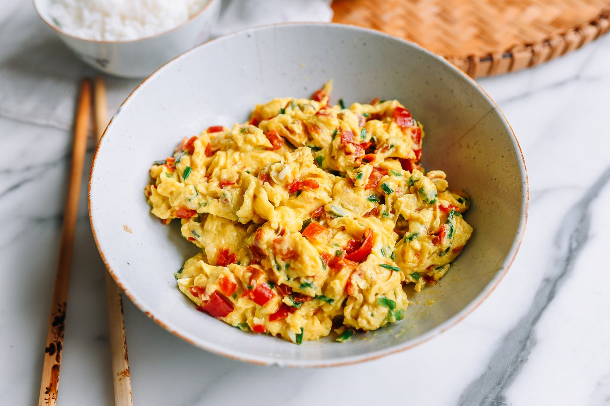

Scrambled Eggs with Salted Chilies

Cold tofu dizzled in spicy sause
Make these fluffy Chinese scrambled eggs with salted chilies
and garlic chives for breakfast, lunch, or dinner!
I have these melt-in-your-mouth fluffy Chinese scrambled eggs
with salted chilies at least
2 times a week if Im on my own. Ill eat it any time of
day—breakfast, lunch, or dinner.
Ingredients
- 6 large eggs
- 1/2 tsp sesame oil
- 1/8 tsp white pepper
- 1 tsp cornstarch
- 3 tbps neutral oil
- 1/2 cups chinese garlic chives
- 1/2 cup hunan salted chilies
steps
- In a medium bowl, add the eggs, sesame oil, and white pepper.
Beat with chopsticks, a fork, or small whisk for about 1 minute,
or until you see some frothy bubbles on the surface of the egg.
Mix the cornstarch into a slurry with 1 tablespoon of water, and
beat into the eggs.
- Heat a wok over high heat, or a nonstick skillet over medium-high
heat. When its really hot, add the oil, followed by the garlic
chives. Cook until theyre wilted but still bright green (you dont
want them to brown at all). Add the duo jiao salted chilies, taking
care not to scoop the liquid with the peppers, which will make your
eggs fry up less evenly. If youre using regular chives, which are
more delicate, reverse the order and add the duo jiao to the wok
before the chives to avoid burning them.
- When the wok is steaming again (i.e., really hot), pour in the eggs.
They should immediately bubble at the edges. Stir with a wok spatula
(or rubber spatula, if using a nonstick skillet) using wide scooping
motions to fold the eggs towards the center, swirling any uncooked
egg back onto the hot surface of the wok. Theres no need to be
strictly uniform—just make sure youre using big strokes to make
fluffy large chunks and constantly moving the eggs to avoid
overcooking them.
- When the egg is just set (i.e., there may still be small pockets of
runny bits), turn off the heat and plate immediately. The eggs will
cook in their residual heat on the way to the dinner table.